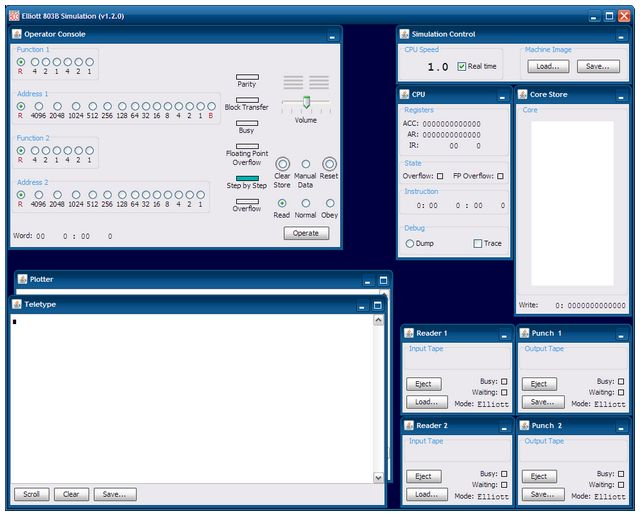

|
This is a quick overview of how to run a simple program using the simulator. There is a lot more detail in the Operation Guide.
In this example we'll just run a small program that prints a short mesage on the output teletype.
If you haven't already done so install the simulator and the related sample programs and documentation by unzipping the rumtime package into a subdirectory on your machine. Make sure you have Java 5 (or later) installed and working - try typing the command "java -version" at a terminal or command prompt if you are not sure.
java -jar elliott803-n.n.n.jar
on some systems (such as Windows) you should also be able to double-click on the JAR file to to launch the application.
The simulator should start and display a window containing several smaller windows something like this:
| Top left is the operator's console |  | Top right is a view of the workings of the CPU and Storage |
| Bottom left is the teletype output | Bottom right are the paper tape readers and punches |
Programs are loaded from paper tape. The program tape needs to be loaded into Reader 1, so hit the "Load..." button on the small window marked Reader 1 and use the file selection dialog to choose a tape to load. Navigate to the tapes / samples directory and select the tape called hello1.tape. Leave the Tape Format option on the right of the dialog set to the default value of Auto.
To get a tape to load you use a small program called the Initial Instructions that is hard-wired into the machine in storage locations 0 to 3. This is a bootstrap program that can read a binary coded tape from the tape reader and load it into store at a specific address. If the binary tape is suitably encoded the initial instructions can also cause a jump to the program entry point when the end of the tape is reached.
The operator console is used to make the computer run the initial instructions by forcing a jump to location 0 where the initial instruction program starts. To make a jump the large number of buttons on the left of the console are used to create a machine instruction, the computer is them told to read and execute that instructions.
The 39 buttons on the left of the console are called the Word Generator, there is one button per bit of a complete machine word. A machine word can hold two full instructions, each instruction being represented as a two (octal) digit op-code (6 bits) and an address from 0 to 8191 (13 bits). Two instructions therefore need 38 bits and that leaves one special bit (known as the B digit) that sits between the two.
Pressing just the single top left most "4" button (as shown in the red circle below) creates a pair of instructions that would be written as 40 0 : 00 0. The first instruction has a 40 op-code which is a jump and the target address is 0. The second instruction has a 00 op-code which is a no-op, but it doesn't really matter as it will not get executed.

To execute this instruction to cause a jump to the initial instructions which will then load the program in the tape reader, we use the operation buttons at the bottom right (as shown in green above).
First ensure the Read button is selected and then press the Operate key. This reads the instruction on the word generator into the CPU ready to be run.
Next select the Normal button and again press the Operate key. This sets the CPU running normally and it executes instructions starting with the one we just loaded. We therefore do a jump to location zero and the hard-wired initial instructions take over. These read the tape, load the program into store and jump to its entry point.
If all is correct you should see a message printed to the output teletype.
If you want to run the program again, you should first press the Reset key on the console, reload the program tape in the reader and re-execute the 40 0 instruction - assuming the word generator buttons are still correct just select the sequence Read, Operate, Normal, Operate again.
Of course, since the program remains in store you don't really need to load it from tape again to re-run it, you could just execute a jump to the program entry point rather than a jump to location zero. See the Operation Guide or the other Sample Programs for further details.
| Tim Baldwin December 2009 tjb803@tinymail.co.uk |
Return to index
© Tim Baldwin 2009 |